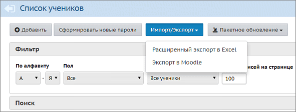

Данная страница предназначена:
1) для первоначального ввода списка учащихся;
2) для редактирования личных карточек учащихся;
3) для поиска учащихся в системе с использованием различных фильтров;
4) для экспорта списка учащихся в другие программы и для печати.
Ввод списка учащихся
Для зачисления учащихся в школу следует использовать кнопку Добавить. После этого вы попадаете в Книгу движения учащихся, где нужно создать приказ о зачислении, затем воспользоваться одним из способов ввода. Например:
| · | при быстром вводе информация вводится с помощью формы для ввода;
|
| · | при импорте вносится информация из специально подготовленного файла,
|
Редактирование личных карточек учащихся
Для редактирования личных карточек отдельных учащихся щёлкните на фамилию, имя учащегося, и вы окажетесь на странице Сведения об ученике.
О массовом редактировании списка учащихся - см. ниже Кнопка "Пакетное обновление".
Для редактирования сведений об учениках у вас должно быть право доступа Редактировать все сведения об учениках и родителях или Редактировать сведения об учениках и родителях в своём классе. Если такого права у вас нет, то для просмотра кратких сведений у вас должно быть право доступа Просматривать краткие сведения об учениках и родителях.
Удаление учащихся
Важно! Если учащийся выбыл из школы, то его нельзя удалять: необходимо перейти в Книгу движения учащихся и создать приказ о выбытии данного ребёнка.
А возможность удаления учащихся (без приказа о выбытии) служит только для удаления явно ошибочных записей. Для удаления учащихся необходимо иметь право доступа Удалять пользователей из системы.
Фильтрация списка и быстрый поиск учащихся
Сверху на экране есть секция "Фильтр", в которой необходимо выбрать параметры "По алфавиту" и/или "Пол" и/или "Класс" и нажать кнопку Применить.
Для быстрого поиска ученика щёлкните по секции "Поиск":

Введите в поле "Фамилия" первые буквы его фамилии и нажмите кнопку Поиск.
Результаты поиска выводятся независимо от выбранных параметров в секции "Фильтр".
Что такое "Прикреплённые к ОО" учащиеся?
Категория "Прикреплённые к ОО" - это ученики, которые прикреплены к школе, но в системе СГО не числятся в списке конкретного класса. Например, находящиеся на индивидуальном обучении на дому. Более подробно о категории "Прикреплённые к ОО".
Кнопка Импорт/Экспорт

Данная кнопка обеспечивает:
1. Возможность выгрузки полных данных об учащихся и родителях.
| Выберите параметры фильтра, затем нажмите кнопку Применить. Далее нажмите кнопку Расширенный экспорт в Excel. Таким способом можно получить файл в формате MS Excel, который содержит сведения о выбранных учащихся (краткие либо полные - вы можете указать в диалоговом окне). В Excel-файле для каждого учащегося будут выведены сведения об его родителях (также краткие либо полные). Полученный Excel-файл будет иметь формат, совместимый с форматом импорта новых учащихся.
|
| Выберите параметры фильтра, нажмите кнопку Применить. Затем выберите команду Экспорт в Moodle. (Подробнее о совместной работе системы "Сетевой Город" и системы дистанционного обучения "Moodle" можно прочитать в документации, см. папку Moodle в инсталляционном пакете "Сетевого Города").
|
Кнопка "Сформировать новые пароли"
Администратор системы может провести индивидуальную или массовую смену паролей, с присвоением случайных паролей, которые он затем может раздать учащимся
| 1. | Выведите на экран список учеников (с помощью кнопки Применить).
|
| 2. | Нажмите кнопку Сформировать новые пароли, и вы увидите справа в таблице графу "Новый пароль", с возможностью отметить учеников, которым система должна сгенерировать новые пароли.
|
| 3. | Отметьте учеников и нажмите кнопку Продолжить. Обратите внимание! Выбранным ученикам будет сброшен их текущий пароль.
|
| 4. | Система присвоит выбранным ученикам новые пароли, которые будут случайной последовательностью латинских букв, цифр и знаков препинания.
|
| 5. | На экран будет выведена таблица учеников, которым сформированы новые пароли, с удобной возможностью распечатать этот список. Обратите внимание! Кроме этой таблицы, новые пароли нигде не отображаются, их необходимо сразу распечатать либо скопировать с экрана.
|
| 6. | При первом входе в систему ученика с новым паролем, система предложит ему сменить пароль на свой собственный.
|
Кнопка "Пакетное обновление"
Данная кнопка обеспечивает возможность массового редактирования личных карточек учащихся.
Выберите параметры фильтра, затем нажмите кнопку Применить. Далее нажмите кнопку Пакетное обновление->1. Выгрузка данных. Таким способом можно получить файл в формате MS Excel, который содержит полные сведения о выбранных учащихся.
Отредактируйте этот файл на своём рабочем месте с помощью MS Excel, после этого файл удобно импортировать обратно в систему с помощью команды Пакетное обновление->2. Обновление данных. Подробнее см. здесь: Как пользоваться пакетным обновлением.
Время входа учащихся в систему
Кнопки На печать и Экспорт в Excel на экране "Ученики" (аналогично экранам "Сотрудники", "Родители") - позволяют не просто отправить таблицу с экрана на печать или в Excel. А по сути, это полезные отчёты об учащихся:
| · | кнопка На печать выводит отчёт о входе учащихся в систему: в частности, выводятся логин, класс, время последнего входа в систему;
|
| · | кнопка Экспорт в Excel выводит таблицу сведений об учащихся:
|
| - полностью все поля личных карточек - при наличии права доступа Редактировать все сведения об учениках и родителях,
|
| - или только краткие сведения - при наличии права доступа Просматривать краткие сведения об учениках и родителях.
|
Следует учитывать, что экспортированный таким образом Excel-файл после внесённых вами изменений нельзя вернуть обратно в систему. Для массового редактирования личных карточек используйте "Расширенный импорт", см.выше.
Причём кнопки На печать и Экспорт в Excel выводят только записи, удовлетворяющие параметрам в секции Фильтр.
Сортировка списка учащихся на экране
В таблице учащихся показываются пользовательские имена на экране. Однако, сортировка списка происходит по фамилии, а не имени на экране.